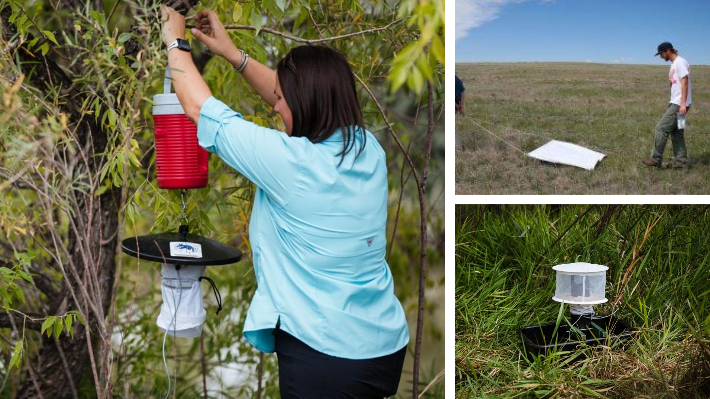
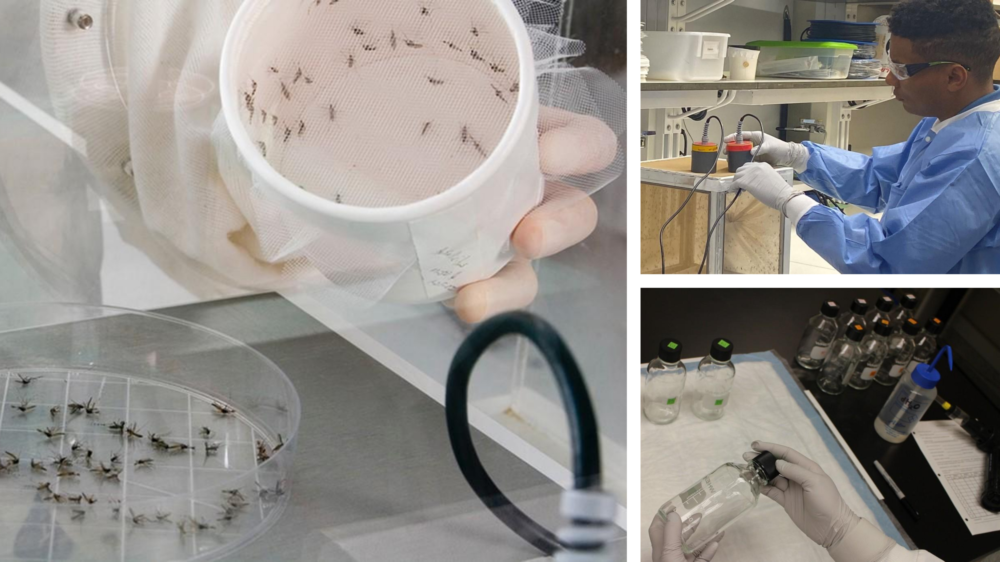
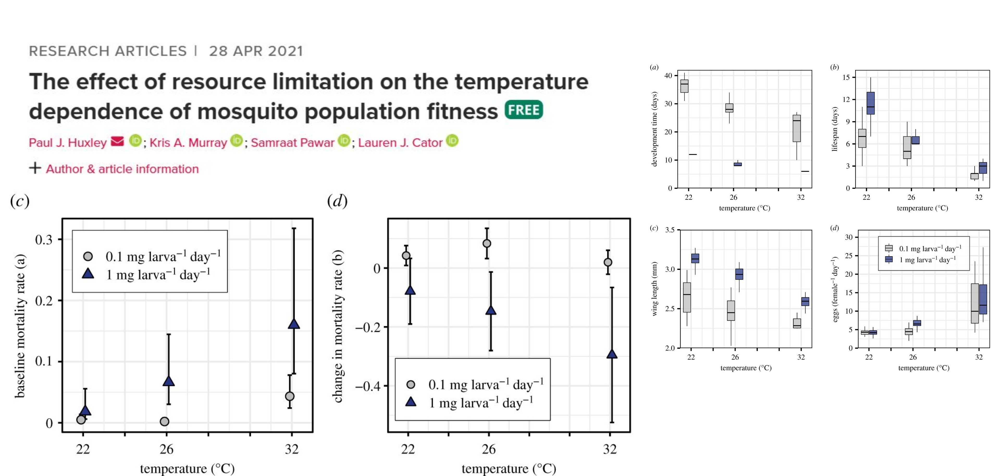
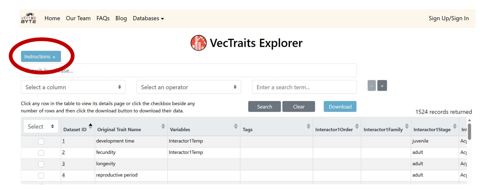
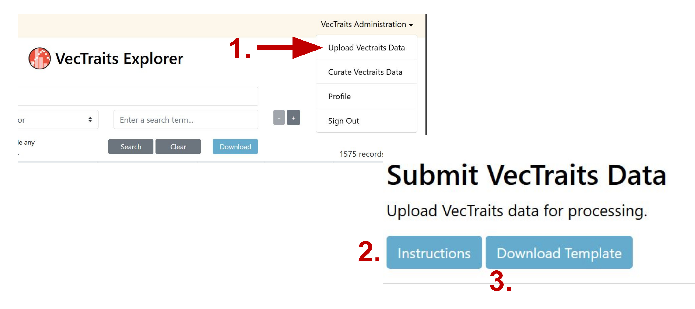
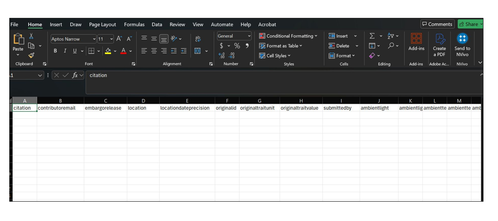
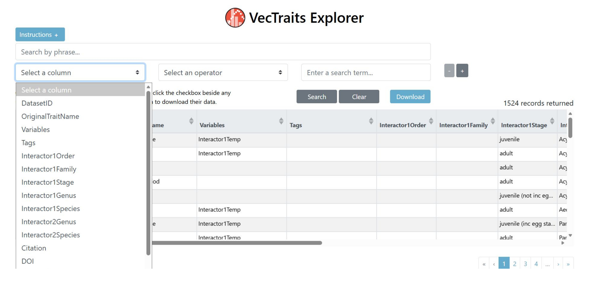
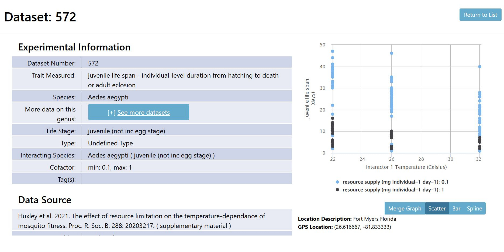
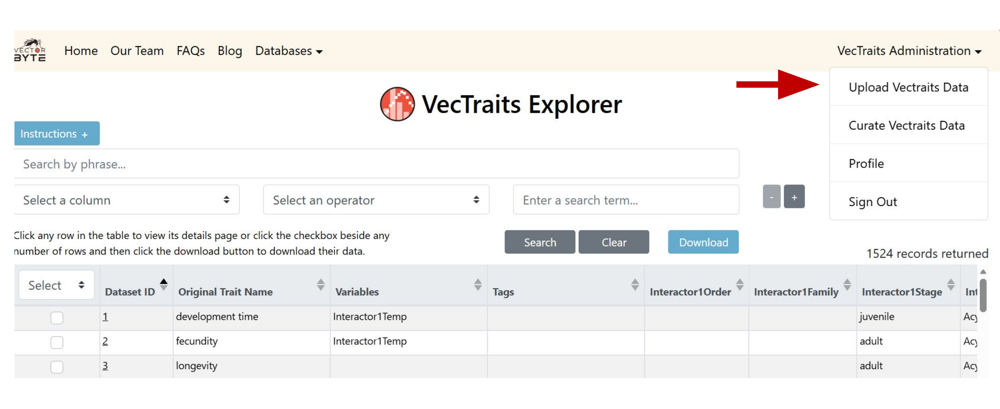

Introduction to Using the VecTraits Database
VectorByte Methods Training
The VectorByte Team (Cat Lippi, PhD, Virginia Tech)
Overview of VectorByte
- VectorBiTE RCN
- VectorByte \(\Rightarrow\) two databases
- VecDyn and VecTraits
VecDyn
- Vector abundance
- Typically field-collected surveillance data

VecTraits
- Biological trait data
- Typically results from controlled laboratory experiments

Vector Trait Data
Vector trait: measurable biological aspects of life-history, behavior, or vector competence
- Because we are dealing with ectothermic vectors, these are often measured against temperature in controlled laboratory environments
Examples of Studies

Flexible Framework
- VecTraits template provides a starting point
- Required fields
- Commonly used fields
- Each column has data format requirements (e.g., text, numeric, etc)
- NO strict format for most study aspects (e.g., units used in study, taxonomy)
- Can be expanded as needed to accommodate study designs with more interactors
VecTraits Column Definitions

VecTraits Required Columns
A minimum set of columns required in the dataset for successful upload
These cannot be missing
They should include all available data
If a required column is missing, file may fail to upload without any error
VecTraits Required Columns
- Original Trait Value
- Original Trait Unit
- Original ID
- Location
- Location Date Precision
- Submitted By
- Contributor Email
- Citation
- Embargo Release
More Column Definitions
- Original Trait Name: trait as named in source
- Original Trait Def: definition of trait as named in source
- Original Error: error recorded in study (additional column for units)
- Interactor1: lowest taxonomic identity of main study organism
- Interactor1 Number: if grouped, number of individuals (i.e., experiment sample size)
- Interactor1 Temp: experimental temperature (additional column for units)
More Column Definitions
- Interactor2: lowest taxonomic identity of additional organisms in experiment Note: can be expanded to accomodate experimental design
- Second Stressor: additional experimental factors (e.g., CO2)
- Notes: any additional information not captured with existing fields
Where to Find Template and Instructions
- Note: Must be logged into VectorByte account

VecTraits Template
EXERCISE: Take a moment to download the VecTraits template

Study Traits
- What is the main trait or outcome being measured in your study?
- Sometimes multiple traits measured at once
- May require formatting into separate datasets
Individual Observations vs Grouped Data
- How were data recorded in the study?
- Individual measurements
- Group averages (include sample sizes!)
- Repeated measurements
Study Parameters
- Record all controlled aspects of experiment
- Anything that was manipulated in the study (e.g., temperature, humidity, food concentration)
- Ideally enough information to replicate experiment
Other Experimental Stressors
- Some studies may include other factors in addition to trait and main experimental parameters (e.g., temperature)
- Some common examples are CO2 concentrations or pesticide exposure
Vector Taxonomy
- Full taxonomic grouping in study/paper \(\rightarrow\) ‘interactorx’ column
- Can include information on subspecies, species complex, biotype, etc
- Dedicated columns for taxonomic groupings (Kingdom, Phylum, etc.)
- ‘interactorxspecies’ column should only contain specific epithet
- Add additional interactors (e.g., interactor2…) with associated taxonomy for other organisms in study
- Interactors may include pathogens, hosts, and plants
Laboratory Conditions
- What factors were controlled in the laboratory?
- These need to be recorded!
- Ambient holding temperature, relative humidity, photoperiod, rearing temperature, feeding concentrations, etc.
- Anything that was not an experimental parameter, but still controlled or recorded as part of the experiment
Additional Interactors
- Interactor1 is typically the vector being studied
- Additional interactors can be recorded for other named organisms in study
- The VecTraits template can be expanded to accommodate additional species
- These may include parasites, hosts, viruses, plant substrate, etc
Digitizing Trait Data
- Full data not always available
- Try to contact study authors
- Some data and results are only provided in tables and figures
Digitizing Published Studies
- Check supplemental materials first
- Consider reaching out to CA
- Identify where requisite data are in paper
- Tables are typically easier
- Make sure to check text!
- Make sure figures are displaying unique data
- Check for data that will ensure usability (e.g., sample sizes, error, etc)
Manual Digitization
- Time consuming
- May not be practical for large groups
- Great deal of control
- Issues with agreement between digitizers
- More of an issue when digitizing figures
Finding Data in VecTraits

Downloading Data from VecTraits

Downloading Data from VecTraits
Exercise: search the database and download a dataset
- Choose a vector (or trait) and search the database
- Review search results
- Find a dataset and view details
- Download and view dataset on your computer
Contributing Data to VecTraits

Common Sources of Upload Errors
- Missing required columns
- Special characters and accents (e.g., check citations, units, and names)
- Incorrect character type for column (e.g., characters in numeric)
- Autofill for unique ID or citation columns (e.g., spreadsheet autofill options will increase numbers incrementally)
- If there are multiple errors, may not get a specific warning
Citing VecTraits/Data Ecosystem
- LR Johnson, L Cator, SSC Rund, SJ Ryan, PJ Huxley, and S Pawar. 2023. “VecTraits Explorer”. University of Notre Dame. DOI: 10.7274/28020782
- SJ Ryan, LR. Johnson, CA Lippi, L Cator, S Pawar, and SSC Rund. 2023. “The Vector Data Ecosystem.” University of Notre Dame. DOI: 10.7274/27854508 or
- CA Lippi, SSC Rund, SJ Ryan, Characterizing the Vector Data Ecosystem, Journal of Medical Entomology, Volume 60, Issue 2, March 2023, Pages 247–254
For more info: www.vectorbyte.org/blog/how-to-cite-us